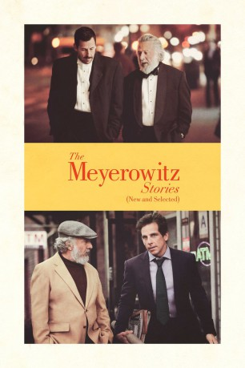

#7298 The Meyerowitz Stories
 
 IMDB-Wertung: 7.0 / 10
IMDB-Wertung: 7.0 / 10  Metascore: 79
Metascore: 79 
Harold Meyerowitz, der sein ganzes Leben der Kunst verschrieben hat, musste seine schillernden Tage als erfolgreicher Künstler schon lange hinter sich lassen und arbeitet nun als Kunstprofessor an einer Universität. Dass ihm diese notgedrungene Karriere missfällt, bekommen auch seine drei Kinder oft genug am eigenen Leib zu spüren. Während Jean allerdings etwas aus ihrem Leben gemacht und Distanz zum Vater gefunden hat, ist Matthew mittlerweile von New York nach Los Angeles geflüchtet. Einzig Danny sucht immer noch die Nähe seines Vaters, obwohl er von ihm ständig kritisiert wird. Für Danny stand früher eine erfolgreiche Karriere als Musiker in den Sternen, heute hat er eine gescheiterte Ehe hinter sich und ist arbeitslos. Obwohl er von dem eigenen Vater stets am Erfolg seiner Geschwister gemessen wird, kann er sich nicht von ihm lösen und verehrt sogar dessen Kunst.
Jahr: 2017
Dauer: 112 Minuten
FSK:
Land: USA Studio: NetflixTonspuren: DD5.1 - , DD5.1 - ,
Untertitel: Deutsch, Englisch, , Französisch, , , ,
Auflösung: 1080p (1920x1080) Größe: 7567 MB
Genre: Drama, Komödie
Regisseur: Noah Baumbach
Drehbuch: Noah Baumbach
Soundtrack:
Darsteller:
 Adam Sandler als Danny
Adam Sandler als Danny- Grace Van Patten als Eliza Meyerowitz
 Dustin Hoffman als Harold
Dustin Hoffman als Harold Elizabeth Marvel als Jean Meyerowitz
Elizabeth Marvel als Jean Meyerowitz Emma Thompson als Maureen
Emma Thompson als Maureen Danny Flaherty als Marcus
Danny Flaherty als Marcus Adam David Thompson als Brian
Adam David Thompson als Brian- Ronald Peet als James
 Judd Hirsch als L.J. Shapiro
Judd Hirsch als L.J. Shapiro- Rebecca Miller als Loretta Shapiro
 Sigourney Weaver als Sigourney Weaver
Sigourney Weaver als Sigourney Weaver- David Cromer als Glenn Twitchell
 Ben Stiller als Matthew
Ben Stiller als Matthew Adam Driver als Randy
Adam Driver als Randy Matthew Shear als Gabe
Matthew Shear als Gabe- Gibson Frazier als Maître d
 Jordan Carlos als Waiter
Jordan Carlos als Waiter- Benjamin Thys als European Man
- Lyne Renee als European Woman
 Candice Bergen als Julia
Candice Bergen als Julia Sakina Jaffrey als Dr. Malini Soni
Sakina Jaffrey als Dr. Malini Soni- Gayle Rankin als Pam
 Michael Chernus als Male Nurse
Michael Chernus als Male Nurse Cindy Cheung als Nurse #1
Cindy Cheung als Nurse #1- Mandy Siegfried als Nurse #2
 Victor Cruz als Doctor, ICU
Victor Cruz als Doctor, ICU- Joel Bernstein als Doctor, End of Life
- Jerry Matz als Paul Epstein
- Germar Terrell Gardner als Paul's Nurse
 Mickey Sumner als Woman at Bard
Mickey Sumner als Woman at Bard- Justin Winley als Robin
 Carlos Jacott als Town Car Driver
Carlos Jacott als Town Car Driver- Nico Baumbach als Whitney Employee
 Marceline Hugot als Lady at Gallery Opening
Marceline Hugot als Lady at Gallery Opening- Marek Radin als Guest
- Rachel Zeiger-Haag als Gallery Girl
- Jason Daunno als Guy at the Gallery , uncredited
- Annabelle Dexter-Jones als Gallery Girl , uncredited
 Takako Haywood als Tourist #1 , uncredited
Takako Haywood als Tourist #1 , uncredited- Teniel Humeston als Gallery Girl , uncredited
 Jared Sandler als College Kid #2 , uncredited
Jared Sandler als College Kid #2 , uncredited Nancy Ellen Shore als Doctor , uncredited
Nancy Ellen Shore als Doctor , uncredited- Hannah Mitchell als MOMA Employee
- James Hamilton als MOMA Guest
- Josh Hamilton als Loretta's Friend
- Kareem Williams als Nurse's Aide
- Vincent Martini als Rabbit
- Marquis Rodriguez als College Kid , uncredited
- Michelle Santiago als Hospital Patient , uncredited
- McManus Woodend als Gary , uncredited
Datei: X:\2017(G-M)\Meyerowitz Stories, The (2017, FSK, 1920x1080).mkv seit 15.10.2017
Festplatte: HD 2017(A-Z)-2018(A-F)
 Es gibt insgesamt 148 Filme in der Gruppe '2017(G-M)'
Es gibt insgesamt 148 Filme in der Gruppe '2017(G-M)'